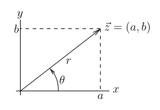
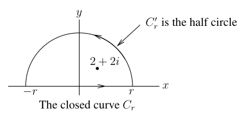
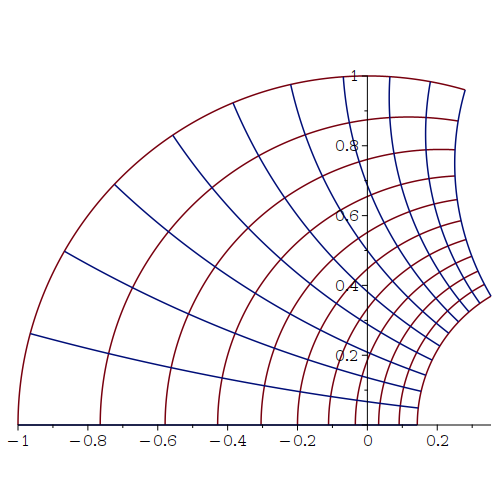
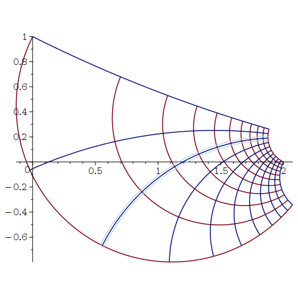
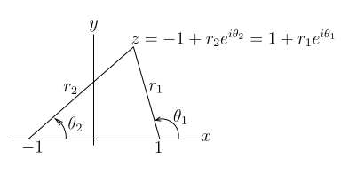
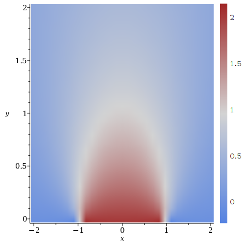

This document is a brief review of basic complex analysis using Maple. By default, Maple assumes that all variables are representing complex numbers. So, we have been using complex expression since the beginning.
Any number of the form \(a+bi\), where \(a\) and \(b\) are real numbers, is a complex number. The number \(i\) is the imaginary number such that \(\displaystyle i^2 = -1\). In Maple, the number \(i\) is denoted by the capital letter I.
> I; I^2;\[ \begin{split} & I \\ & -1 \end{split} \]
We present below some examples of the basic operations with complex numbers.
> z:=3+4*I; w:=-3-2*I; z+w; z-w; z*w; z/w;\[ \begin{split} & z := 3 + 4\,I \\ & w := -3 -2\,I \\ & 2\,I \\ & 6 + 6\,I \\ & -1 -18\,I \\ & - {\displaystyle \frac {17}{13}} - {\displaystyle \frac {6}{13}} \,I \end{split} \]
Given a complex number \(z=a+b\,i\), the real number \(a\) is called the real part of \(z\) and the real number \(b\) is called the imaginary part of \(z\). The Maple commands Re() and Im() are used to get the real and imaginary parts of a complex number.
> Re(z); Im(z);\[ \begin{split} & 3 \\ & 4 \end{split} \]
Any complex number \(z = a + b\,i\) defines a unique vector \(\vec{z} = (a,b)\) in the \(x,y\) plane (and vice-versa).

Hence, any complex number \(z=a+b\, i \neq 0\) is completely determined by the length \(\displaystyle r=\sqrt{a^2+b^2}\) of the vector \(\vec{z}\) and the angle \(\theta\) between the vector \(\vec{z}\) and the \(x\) axis, measured counterclockwise from the \(x\) axis and such that \(-\pi < \theta \leq \pi\). The origin is an exception because \(r=0\) and \(\theta\) can be any angle. We have that \(a = r \cos(\theta)\) and \(b = r \sin(\theta)\). This gives the polar form
\[ z = r e^{\theta i} = r\cos(\theta) + i\, r\sin(\theta) \]of the complex number \(z\). The formula \(\displaystyle e^{\theta i} = \cos(\theta) + i\,\sin(\theta)\) for all \(\theta \in \mathbb{R}\) is known as Euler's formula. The Maple function abs() gives the norm (length) of a complex number and argument() gives the value of the angle between the vector and the \(x\) axis, measured counterclockwise from the \(x\) axis and such that the angle is between \(-\pi\) (excluded) and \(\pi\) (included).
> r:=abs(z); theta:= argument(z);\[ \begin{split} & r := 5 \\ & \theta := \arctan\left({\displaystyle \frac {4}{3}} \right) \end{split} \]
> evalc(r*exp(theta*I));\[ 3 + 4\,I \]
Note: The previous figure could be drawn with Maple. However, the result is not really nice. The reader may want to execute the following commands in Maple.
> with(plots): with(plottools):
line1 := arrow([-1, 0], [4, 0], 0.05, 0.2, 0.05, color = black):
line2 := arrow([0, -1], [0, 4], 0.05, 0.2, 0.05, color = black):
line3 := line([0, 0], [2, 3.6], color = red):
text1 := textplot([2, 3, "z=(a,b)"], align = {ABOVE, RIGHT}, font = [COURIER, 16]):
text2 := textplot([0, 4, "y"], align = RIGHT, font = [COURIER, 16]):
text3 := textplot([4, 0, "x"], align = RIGHT, font = [COURIER, 16]):
text4 := textplot([2, 1, "q"], align = RIGHT, font = [SYMBOL, 16]):
arc1 := arc([0, 0], 2, 0 .. Pi/3, color = blue):
arrow1:=arrow([1.2,1.6],[1,1.7],0.1,0.2,1,color=blue):
text5 := textplot([1, 2, "r"], align = LEFT, font = [COURIER, 16]):
display({arc1, arrow1, line1, line2, line3, text1, text2, text3, text4, text5},
axes = none, view = [-1 .. 5, -1 .. 5], scaling = constrained);
Consider the function defined by the following Maple command.
> f:=w->w^2+3*w;\[ f := w\rightarrow w^{2} + 3\,w \]
If we evaluate this function at \(z=3+4\,i\), then we get
> f(3+4*I);\[ 2 + 36\,I \]
Suppose that \(z=x+y\,i\), where \(x\) and \(y\) are real. The following two commands tell Maple to treat \(x\) and \(y\) as real variables.
> assume(x,real); assume(y,real);
We then have that \(f(x+y i)\) is given by the following expression.
> fr:=evalc(f(x+y*I));\[ f := x{\scriptsize \sim}^{2} - y{\scriptsize \sim}^{2} + 3 \,x{\scriptsize \sim} + I\,(2\,x{\scriptsize \sim}\,y{\scriptsize \sim} + 3\,y{\scriptsize \sim}) \]
The symbol \(\scriptsize \sim\) after the variables \(x\) and \(y\) indicates that they are real variables. The real and imaginary parts of this function are given below.
> Re(fr); Im(fr);\[ \begin{split} & x{\scriptsize \sim}^2-y{\scriptsize \sim}^2+3 x{\scriptsize \sim} \\ & 2 x{\scriptsize \sim} y{\scriptsize \sim} +3 y{\scriptsize \sim} \end{split} \]
The derivative of a function \(f:\mathbb{C} \to \mathbb{C}\) is defined by
\[ f'(z) = \lim_{w\to 0} \frac{f(z+w)-f(z)}{w} \]if this limit exists. We emphasize the fact that \(w \in \(\mathbb{C}\) and can approach the origin in any imaginable ways. If \(f(z) = u(z) + i\, v(z)\) is derivable, then
\[ \begin{split} u_x(z) &= v_y(z) \\ u_y(z) &= -v_x(z) \end{split} \]These two equations are known as the Cauchy-Riemann equations. If \(u:\mathbb{C} \cong \mathbb{R}^2 \to \mathbb{R}\) and \(v:\mathbb{C}\cong \mathbb{R}^2 \to\mathbb{R}\) are two derivable functions that satisfy the Cauchy-Riemann equations, then the function \(f(z) = u(z)+i\,v(z)\) is a derivable function of one complex variable. An amazing property is that if the function \(f:\mathbb{C}\rightarrow \mathbb{C}\) is derivable, then it is infinitely many times derivable.
Example: Consider the function defined by the following Maple command.
> f:=z->z^2*(1-z);\[ f := z\rightarrow z^{2}\,(1 - z) \]
We verify that \(f\) satisfies the Cauchy-Riemann equations.
> assume(x,real); assume(y,real); > u:=Re(evalc(f(x+I*y))); v:=Im(evalc(f(x+I*y)));\[ \begin{split} & u := (x{\scriptsize \sim}^2-y{\scriptsize \sim}^2) (-x{\scriptsize \sim}+1)+2 x{\scriptsize \sim} y{\scriptsize \sim}^2 \\ & v := 2 x{\scriptsize \sim} y{\scriptsize \sim} (-x{\scriptsize \sim}+1)-(x{\scriptsize \sim}^2-y{\scriptsize \sim}^2) y{\scriptsize \sim} \end{split} \]
> diff(u,x); diff(v,y);\[ \begin{split} & 2 x{\scriptsize \sim} (-x{\scriptsize \sim}+1)-x{\scriptsize \sim}^2+3 y{\scriptsize \sim}^2 \\ & 2 x{\scriptsize \sim} (-x{\scriptsize \sim}+1)-x{\scriptsize \sim}^2+3 y{\scriptsize \sim}^2 \end{split} \]
We do have that \(u_x(x,y) = v_y(x,y)\).
> diff(u,y); diff(v,x);\[ \begin{split} & -2 y{\scriptsize \sim} (-x{\scriptsize \sim}+1)+4 x{\scriptsize \sim} y{\scriptsize \sim} \\ & 2 y{\scriptsize \sim} (-x{\scriptsize \sim}+1)-4 x{\scriptsize \sim} y{\scriptsize \sim} \end{split} \]
We also have that \(u_y(x,y)=-v_x(x,y)\).
Suppose that \(f:D \to \mathbb{C}\) is a derivable function where \(D \subset \mathbb{C}\) is a disk of radius \(R\) centred at \(z_0\). The Taylor series of \(f\) at \(z_0\) is the series
\[ f(z) = \sum_{n=0}^\infty\,a_n (z-z_0)^n \qquad , \qquad z \in D \ , \]where
\[ a_n = \frac{1}{n!}\,\frac{\partial^n}{\partial z^n}f(x_0) \ . \]The series converges (pointwise) to \(f(z)\) for all \(z \in D\).
Remark: The formula for the Taylor series of an infinitely derivable function \(f:\mathbb{R}\to\mathbb{R}\) is almost identical to the formula above for a derivable function from \(\mathbb{C}\) into \(\mathbb{C}\). Namely, it is
\[ f(x) \sim \sum_{n=0}^\infty\,a_n (x-x_0)^n \ , \]where
\[ a_n = \frac{1}{n!}\,\frac{\partial^n}{\partial x^n}f(x_0) \ . \]The major difference is the use of \(\sim\) for the Taylor series of infinitely derivable functions from \(\mathbb{R}\) into \(\mathbb{R}\) of the equality sign for the Taylor series for derivable functions of \(\mathbb{C}\) into \(\mathbb{C}\). The reason for this difference is that the Taylor series for a function \(f:\mathbb{R} \to \mathbb{R}\) may not converge for any \(x \neq x_0\) or, if it converges, it may not converge pointwise toward \(f\) in a neighbourhood of \(x_0\). For instance, if \(f:\mathbb{R} \to \mathbb{R}\) is the function defined by
\[ f(x) = \begin{cases} e^{-1/x^2} & \quad \text{if} \quad x > 0 \\ 0 & \quad \text{if} \quad x \leq 0 \end{cases} \]and \(x_0=0\), then the Taylor series of \(f\) at the origin is null because all derivatives of \(f\) at the origin are null. However, \(f\) is not null in the neighbourhood of the origin. This shows that the theory of Taylor series is simpler for functions of \(\mathbb{C}\) into \(\mathbb{C}\) than it is for functions of \(\mathbb{R}\) into \(\mathbb{R}\).
Consider the function \(f:\mathbb{C} \to \mathbb{C}\) defined in Maple by the following command.
> f:=z->sin(z^2-4);\[ f := z\rightarrow \sin(z^{2} - 4) \]
The Taylor series of \(f\) at \(z=2\) is given by the following command.
> unassign('z'):
> Tf:=series(f(z),z=2,10);
\[
\begin{split}
& Tf := 4\,(z - 2) + (z - 2)^{2} -
{\displaystyle \frac {32}{3}} \,(z - 2)^{3} - 8\,(z - 2)^{4} +
{\displaystyle \frac {98}{15}} \,(z - 2)^{5} +
{\displaystyle \frac {21}{2}} \,(z - 2)^{6} \\
& + {\displaystyle \frac {656}{315}} \,(z - 2)^{7} -
{\displaystyle \frac {196}{45}} \,(z - 2)^{8} -
{\displaystyle \frac {19151}{5670}} \,(z - 2)^{9} +
\mathrm{O}((z - 2)^{10})
\end{split}
\]
The terms in \((z-2)\) up to degree \(9\) (one less than the argument \(10\)) are explicitly computed by the function series(). The term \(\displaystyle O((z-2)^{10})\) denotes the remainder of the Taylor series; the terms in \((z-2)\) of degrees greater than or equal to \(10\). Because of the big \(O\) expression for the remainder of the Taylor series of \(f\), the formula given in Tf cannot be used in computations. To use the Taylor series in computations, we have to truncate the series to the degree that we want. For instance, the truncation of degree nine of the Taylor series of \(f\) above is given by the following command.
> Tft:=convert(Tf,polynom);\[ \begin{split} & Tft := 4\,z - 8 + (z - 2)^{2} - {\displaystyle \frac {32}{3}} \,(z - 2)^{3} - 8\,(z - 2)^{4} + {\displaystyle \frac {98}{15}} \,(z - 2)^{5} + {\displaystyle \frac {21}{2}} \,(z - 2)^{6} \\ & + {\displaystyle \frac {656}{315}} \,(z - 2)^{7} - {\displaystyle \frac {196}{45}} \,(z - 2)^{8} - {\displaystyle \frac {19151}{5670}} \,(z - 2)^{9} \end{split} \]
Hence
> evalf(subs(z=2+I,Tft));\[ - 23.85555556 + 15.73985891\,I \]
is an approximation of
> evalf(f(2+I));\[ - 22.97908558 + 14.74480519\,I \]
We need more terms of the Taylor series of \(f\) to get a better approximation. We may use the function taylor() instead of the function series() (with the same arguments) to get the Taylor series of a function. We can also compute any coefficient of the Taylor series using the function coeftayl(). For instance, the coefficient of \(\displaystyle (z-2)^5\) in the Taylor series of \(f\) above at \(z=2\) is given by the following command.
> coeftayl(f(z),z=2,5);\[ \frac{98}{15} \]
Consider a function \(f:\mathbb{C} \to \mathbb{C}\) and suppose that \(f\) has a singularity at \(z=z_0\) (i.e. \(f\) is not derivable at \(z=z_0\)). It may be possible to express \(f\) has a power series at the point \(z=z_0\). In fact, we often have that
\[ f(z) = \sum_{n=-\infty}^\infty\,a_n (z-z_0)^n \]for \(z\) in an annulus of the form \(0 < |z-z_0| < R\) for some \(R > 0\). We may also have that \(a_n\) is non-zero for only a finite number of negative indices \(n\). If \(N\) is the smallest negative index such that \(a_N \neq 0 \), we say that \(z_0\) is a pole of order N. The series above is called the Laurent series of \(f\) at \(z_0\). The sum
\[ \sum_{n=-\infty}^{-1}\, a_n (z-z_0)^n \]is called the principal part of the series.
Example: Consider the function \(f:\mathbb{C} \to \mathbb{C}\) defined in Maple by the following command.
> f:=z->sin(z)/(1-z^2);\[ f := z\rightarrow \frac{\sin(z)}{1 - z^{2}} \]
The Laurent series of \(f\) at \(z=1\) is given by the following command.
> Lf:=series(f(z),z=1,5);\[ \begin{split} & Lf := - {\displaystyle \frac {1}{2}} \,\sin(1)\,(z - 1)^{-1} + \left( - {\displaystyle \frac {1}{2}} \,\cos(1) + {\displaystyle \frac {1}{4}} \,\sin(1)\right) + \left({\displaystyle \frac {1}{8}} \,\sin(1) + {\displaystyle \frac {1}{4}} \,\cos(1)\right)\,(z - 1) + \\ & \left( - {\displaystyle \frac {1}{24}} \,\cos(1) - {\displaystyle \frac {1}{16}} \,\sin(1)\right)\,(z - 1)^{2} + \left({\displaystyle \frac {1}{96}} \,\sin(1) + {\displaystyle \frac {1}{48}} \,\cos(1)\right)\,(z - 1)^{3} + \mathrm{O}((z - 1)^{4}) \end{split} \]
The principal part of this Laurent series is \(\displaystyle \frac{-\sin(1)}{2(z-1)}\). Hence, \(1\) is a pole of order one of \(f\).
Example: Consider the function \(f:\mathbb{C}\to \mathbb{C}\) defined in Maple by the following command.
> f:=z->1/sin(z^3);\[ f := z\rightarrow {\displaystyle \frac {1}{\sin(z^{3})}} \]
Its Laurent series at \(z=0\) is given by the following command.
> series(f(z),z=0,10);\[ z^{-3} + {\displaystyle \frac {1}{6}} \,z^{3} + \mathrm{O}(z^{4}) \]
Therefore, \(z=0\) is a pole of order three of \(f\).
The coefficient of the term \( 1/(z-z_0)\) in the Laurent series of a function \(f\) at a point \(z_0\) is called the residue of \(f\) at \(z_0\). This coefficient is denoted \(\mathrm{res}(f,z_0)\). We have the following result.
\[ \oint_C f(z)\ \text{d}z = 2\pi i \big( \mathrm{res}(f,z_1) + \mathrm{res}(f,z_2) + \ldots + \mathrm{res}(f,z_k) \big) \ , \] where \(C\) is a closed curve in the complex plane, the curve \(C\) is
positively oriented and \(z_1, z_2, \ldots , z_k\) are all the poles
of \(f\) inside the region \(D\) bounded by the curve \(C\). The
positive orientation of \(C\) is such that the region \(D\) is to the
left
of the curve \(C\) as we
move along this curve.
The residues of \(f\) at \(z_0\) can be computed with the Maple function residue().
Example: Consider the function \(f:\mathbb{C} \to \mathbb{C}\) defined by the following Maple command.
> f:=z->1/sin(z);\[ f := z\rightarrow {\displaystyle \frac {1}{\sin(z)}} \]
This function has poles at \(n\pi\) for \(n\) an integer. The residue of \(f\) at \(2\pi\) is given by the following command.
> with(residue): residue(f(z),z=2*Pi);\[ 1 \]
We can check this result by computing the Laurent series of \(f\) at \(2\pi\).
> series(f(z),z=2*Pi,5);\[ (z - 2\,\pi )^{-1} + {\displaystyle \frac {1}{6}} \,(z - 2\,\pi ) + \mathrm{O}((z - 2\,\pi )^{3}) \]
The coefficient of \(\displaystyle \frac{1}{z-2\pi}\) is effectively \(1\).
Example We want to evaluate the integral of the function \(\displaystyle f(z) = \frac{1}{(3z-i)^2 \, \sin(z)}\) counterclockwise along the circle \(C\) of radius \(1\) centred at the origin; namely, we want to evaluate
\[ \oint_C \frac{1}{(3z-i)^2 \, \sin(z)}\ \text{d}z \]with the positive orientation on the curve defined by \(C = \{ z : |z| = 1 \}\).
The function \(f\) is defined by the following Maple command.
> f:=z->1/(sin(z)*(3*z-I)^2);\[ f := z\rightarrow {\displaystyle \frac {1}{\sin(z)\,(3\,z - I)^{2}}} \]
The poles of \(f\) inside the unit disk (i.e. the region bounded by the curve \(C\)) are \(0\) and \(i/3\). Since the orientation of the curve \(C\) is positive, the value of the integral is given by the following command.
> evalf( 2*Pi*I*( residue(f(z),z=0) + residue(f(z),z=I/3)));\[ .1119173282\,I \]
We can directly compute the integral. Since the orientation on the curve \(C\) is counterclockwise, a parametric representation of the curve \(C\) is given by \(\displaystyle z = e^{t\, i}\) for \(0 \leq t < 2\pi\).
> r:=t->exp(t*I);\[ r := t\rightarrow e^{(I\,t)} \]
The value of the integral is given by the following command.
> evalf( int((f@r)(t)*diff(r(t),t),t=0..2*Pi) );\[ -2.962170701*10^{-14} + 0.1119173235\,I \]
For a numerical integration, this result is close enough to the exact value of the integral.
Example We want to evaluate the integral
\[ \int_{-\infty}^\infty\,\frac{\sin(x)}{(x-2)^2+4}\ \text{d}x \ . \]We first note that this integral is the imaginary part of the integral
\[ \int_{-\infty}^\infty\, \frac{e^{ix}}{(x-2)^2+4}\ \text{d}x \]which is the integral
\[ \int_C \,\frac{e^{iz}}{(z-2)^2+4}\ \text{d}z \ , \]where \(C\) is the curve defined by \(z=x\) for \(-\infty < x < \infty\) and the direction along \(C\) is given by \(x\) increasing. The function \(\displaystyle \frac{e^{iz}}{(z-2)^2+4}\) has poles at \(z = 2+2\,i\) and \(z = 2-2\,i\). Moreover,
\[ \lim_{r\rightarrow \infty} \oint_{C_r}\,\frac{e^{iz}}{(z-2)^2+4}\ \text{d}z = \int_C \,\frac{e^{iz}}{(z-2)^2+4}\ \text{d}z \]where
\[ C_r = \{ x : -r \leq x \leq r\}\cup \{ re^{\theta i} : 0 < \theta < \pi \} \]is the closed curve drawn below

because
\[ \lim_{r\rightarrow \infty} \int_{C_r'} \frac{e^{iz}}{(z-2)^2+4} \ \text{d}z = 0 \ , \]where \(C_r'\) is the half circle that is a part of the curve \(C_r\). The proof that this limit is null uses techniques taught in a first course on complex analysis and relied on the fact that the integrand converges uniformly to \(0\) as \(r \to 0\).
The curve \(C_r\) is a positively oriented closed curve surrounding the pole at \(2+2\,i\) if \(r\) is large enough. Hence, the value of the integral of the function \(f\) defined by \(\displaystyle f(z) = \frac{e^{iz}}{(z-2)^2+4}\) along the closed curve \(C_r\) is \(\mathrm{res}(f,2+2i)\) if \(r\) is large enough. This integral is constant for \(r\) large enough. We can perform this computation using the following Maple commands.
> f:=z->exp(z*I)/((z-2)^2+4);\[ f := z\rightarrow {\displaystyle \frac {e^{(I\,z)}}{(z - 2)^{2} + 4}} \]
> evalf(2*Pi*I*(residue(f(z),z=2+2*I)) );\[ - 0.08846622805+ 0.1933022349\,I \]
Thus
\[ \int_C \,\frac{e^{iz}}{(z-2)^2+4}\ \text{d}z = \lim_{r\rightarrow \infty} \int_{C_r}\,\frac{e^{iz}}{(z-2)^2+4}\ \text{d}z = - 0.08846622805+ 0.1933022349\,i \]Finally, we find that the value of our initial integral is given by the following command.
> Im(%);\[ \displaystyle 0.1933022349 \]
We can verify our result with Maple because it can compute the initial improper integral.
> int(sin(x)/((x-2)^2+4),x=-infinity..infinity); evalf(%);\[ \begin{split} & {\displaystyle \frac{\pi \sin(2) \mathrm{cosh}(2)}{2}} - {\displaystyle \frac{\pi \sin(2) \mathrm{sinh}(2)}{2}} \\ & 0.193302235 \end{split} \]
Note: As was the case with the first figure of this document, the previous figure could be drawn with Maple. As before, the resulting figure is not really nice. The reader may want to execute the following commands in Maple.
> with(plots): with(plottools):
line1 := arrow([-10, 0], [10, 0], 0.05, 0.5, 0.05, color = blue):
line2 := line([0, 0], [0, 13], color = black):
line3 := line([10, 0], [14, 0], color = black):
text1 := textplot([14, 0, "x"], align = RIGHT, font = [COURIER, 16]):
text2 := textplot([0, 13, "y"], align = RIGHT, font = [COURIER, 16]):
arc1 := arc([0, 0], 10, 0 .. Pi, color = blue):
text3 := textplot([10, 0, "r"], align = {BELOW, RIGHT}, font = [COURIER, 16]):
text4 := textplot([-10, 0, "-r"], align = {BELOW, LEFT}, font = [COURIER, 16]):
text5 := textplot([2, 3, "2+2*I"], align = RIGHT, font = [COURIER, 16]):
pt := point([2, 2], color = black, symbol = 'SolidCircle'):
text6 := textplot([0, 0, "0"], align = {BELOW}, font = [COURIER, 16]):
text7 := textplot([8.7, 8, "C_r"], align = LEFT, font = [COURIER, 16]):
display({arc1, line1, line2, line3, pt, text1, text2, text3, text4, text5, text6, text7}, axes = none, view = [-11 .. 15, -1 .. 14], scaling = constrained);
A conformal Mapping is a function \(f:\mathbb{C}\to \mathbb{C}\) that preserves the angles between intersecting curves. If the derivative of \(f:\mathbb{C} \to \mathbb{C}\) is never zero, then \(f\) is a conformal mapping. An important family of conformal mappings are the functions of the form
\[ z \mapsto \frac{az+b}{cz+d} = \frac{a}{c} + \frac{bc-ad}{c} \left( \frac{1}{cz+d} \right) \]with \(ad -bc \neq 0\). These functions are called linear fractional transformations. A linear fractional transformation is a composition of a dilatation, \(cz\), followed by a translation, \(cz+d\), followed by an inversion, \(\displaystyle \frac{1}{cz+d}\), followed by another dilatation, \(\displaystyle \frac{bc-ad}{c} \left(\frac{1}{cz+d}\right)\), and finally followed by another translation, \(\displaystyle \frac{a}{c} + \frac{bc-ad}{c}\left(\frac{1}{cz+d}\right) \). Hence, linear fractional transformations preserve circles (a line is a circle of infinite radius.)
A linear fractional transformation is completely and uniquely determined by the image of three points. Consider the linear fractional transformation
\[ f(z) = \frac{2z - 3}{2z + 3} \ . \] This function is defined in Maple by the following command.> f:=z->(2*z-3)/(2*z+3);\[ f := z\rightarrow {\displaystyle \frac {2\,z - 3}{2\,z + 3}} \]
To visualize the conformal aspect of this function, we draw the image of a rectangle by this function. The Maple function conformal() draws the image of rectangles. A rectangle with vertical and horizontal edges is defined by the coordinates of two of its diagonally opposite corners. For instance, the image by \(f\) of the rectangle with diagonally opposite corners at \(0\) and \(2+2\,i\) is drawn by the following Maple command.
> with(plots): conformal(f(z),z=0..2+2*I,scaling=constrained);

The blue and red lines are the image of horizontal and vertical lines respectively (can the reader say why it is so?).
To find the linear fractional transformation \(w=f(z)\) such that \(f(z_1)=w_1, f(z_2)=w_2\) and \(f(z_3)=w_3\), it suffices to solve the equation
\[ \frac{(w-w_1)(w_2-w_3)}{(w-w_3)(w_2-w_1)} = \frac{(z-z_1)(z_2-z_3)}{(z-z_3)(z_2-z_1)} \]for w.
Example: To get the linear fractional transformation \(f\) such that \(f(1)=i, f(2)=3\) and \(f(i)=2\), we have to solve for \(w\) the equation
\[ \frac{(w-i)(3-2)}{(w-2)(3-i)}=\frac{(z-1)(2-i)}{(z-i)(2-1)} \ . \]This is done by Maple with the following commands.
> unassign('w'): unassign('z'):
> eq:=((w-I)*(3-2))/((w-2)*(3-I)) =((z-1)*(2-I))/((z-I)*(2-1)); f:=eval(solve(eq,z));
\[
\begin{split}
& eq := {\displaystyle \frac {({\displaystyle \frac {3}{10}}
+ {\displaystyle \frac {1}{10}} \,I)\,(w - I)}{w - 2}} =
{\displaystyle \frac {(2 - I)\,(z - 1)}{z - I}} \\
& f = \frac{43-19 \,I-41 z+23 \,I z}{21-13 \,I+11 \,I z-17 z}
\end{split}
\]
We verify that we effectively have the right transformation.
> subs(z=1,f);subs(z=2,f);subs(z=I,f);\[ \begin{split} I \\ 3 \\ 2 \end{split} \]
If we draw the image of the rectangle with opposite corners located at \(0\) and \(1+1\,i\), then we get the following figure.
> conformal(f,z=0..1+I,scaling=constrained);

The steady state heat distribution (i.e. independent of time) in a thin plate is governed by the PDE
\[ \frac{\partial^2}{\partial x^2}T(x,y) + \frac{\partial^2}{\partial y^2}T(x,y) = 0 \ . \]Functions \(T\) satisfying this equation are called harmonic functions. The reader should prove using the Cauchy-Riemann equations that the real and imaginary parts of a derivable function from \(\mathbb{C}\) to itself are harmonic functions.
Our goal is to find the steady state heat distribution in a thin plate defined for \(x \in \mathbb{R}\) and \(y \geq 0\), and satisfying the boundary condition
\[ T(x,y) = \begin{cases} 2 & \quad \text{if} \ |x|<1 \ \text{and} \ y=0 \\ 0 & \quad \text{if} \ |x|\geq 1 \ \text{and} \ y =0 \end{cases} \ . \]We also assume that \(T(x,y)\) is bounded for \(y \geq 0\). This is equivalent to requiring that the temperature in the plate converges to zero as \(\|(x,y)\| \to \infty\).
The boundary condition can be interpreted as follows: the boundary is kept at a temperature of \(0\) degree except for the section between \(-1\) and \(1\) where it is kept at a temperature of \(2\) degrees.
This is the type of problems that we generally solve using techniques for the PDE. However, this simple problem can also be solved using conformal mappings as we now show. We use a conformal mapping \(f\) to transform the domain \( \{ x+y i : y \geq 0 \} \) into the horizontal strip
\[ S = \{ w = u+i v : u \in \mathbb{R} \ \text{and} \ 0\leq v \leq \pi \} \ . \]We solve the steady state problem on \(S\). In fact, we will see that the problem is easy to solve it on \(S\). Finally, we use the conformal mapping \(f\) to transform the solution on \(S\) to a solution of the initial problem on the domain \(y\geq 0\).
We transform the upper complex plane (i.e. the set \(\{ z=x+i\,y : y\geq 0\} \)) into the horizontal strip \(S\) with the transformation
\[ w = f(z) = \ln\left(\frac{z-1}{z+1}\right) \ . \]This is a conformal mapping except at \(z=-1,1\). To understand why \(f\) is well defined for \(z \neq -1,1\) and maps the upper half-plane \(y \geq 0\) onto the entire horizontal strip \(S\), let \(\displaystyle z-1=r_1 e^{i\,\theta_1}\) and \(\displaystyle z+1=r_2 e^{i\,\theta_2}\).

We then have that
\[ w= f(z) = \ln\left(\frac{z-1}{z+1}\right) = \ln\left(\frac{r_1}{r_2}\right)+i(\theta_1-\theta_2) \]with \(0 < \theta_1-\theta_2 < \pi\) where \(\ln()\) is well defined because \(r_1,r_2 > 0\) for \(z \neq -1,1\).
Remark: The previous figure could have been drawn with Maple using the commands below for instance.
> with(plots): with(plottools):
arc1 := arc([1, 0], 1.5, 0 .. Pi/3.1, color = blue):
arc2 := arc([-1, 0], 1.5, 0 .. Pi/4.6, color = blue):
line1 := line([-4, 0], [4, 0], color = blue):
line2 := line([0, -0.5], [0, 4], color = blue):
line3 := line([1, 0], [3, 3], color = black):
line4 := line([-1, 0], [3, 3], color = black):
text1 := textplot([4, 0, "x"], align = RIGHT, font = [COURIER, 16]):
text2 := textplot([-0.2, 4, "y"], align = {ABOVE, RIGHT}, font = [COURIER, 16]):
text3 := textplot([2.9, 0.5, "q"], align = LEFT, font = [SYMBOL, 16]):
text8 := textplot([2.75, 0.5, "_1"], align = RIGHT, font = [COURIER, 16]):
text4 := textplot([0.8, 0.8, "q"], align = LEFT, font = [SYMBOL, 16]):
text9 := textplot([0.71, 0.8, "_2"], align = RIGHT, font = [COURIER, 16]):
text5 := textplot([3.5, 2, "r_1"], align = LEFT, font = [COURIER, 16]):
text6 := textplot([0.4, 2, "r_2"], align = RIGHT, font = [COURIER, 16]):
text7 := textplot([3, 3, "z"], align = RIGHT, font = [COURIER, 16]):
display({arc1, arc2, line1, line2, line3, line4, text1, text2, text3, text4, text5, text6,
text7, text8, text9}, axes = none, view = [-6 .. 6, -2 .. 6], scaling = constrained);
If \(z = x \in \mathbb{R}\) (i.e. \(z\) is on the \(x\) axis), we find that the segment of the line \(z=x\) with \(|x|\leq 1\) is mapped onto the entire line \(w=u+i\,v\) with \(v=\pi\), the segment of the line \(z=x\) with \(x<-1\) is mapped onto the line \(w=u\) with \(u>0\) and the segment of the line \(z=x\) with \(x>1\) is mapped onto the line \(w=u\) with \(u<0\). We may extend the function \(f\) to the compactify complex plane by defining \(f\) to be \(\infty\) at \(-1\) and \(1\), and \(0\) at \(\infty\).
We now prove that the solution of the PDE for the steady state heat distribution on the strip \(S\) that satisfies the boundary condition is \(T(u,v)=2v/\pi\). The boundary condition for the domain \(y \geq 0\) are transformed by \(f\) into the conditions \(T(u,0) = 0\) and \(T(u,\pi) = 2\) on the strip \(S\). The function \(T\) satisfies the PDE for the steady state heat distribution (i.e. \(T\) is a harmonic function inside the strip \(S\)) because it is the imaginary part of the derivable function \(g\) defined by \(g(w) = 2w/\pi\) where \(w=u+i\,v\). The boundary conditions are obviously satisfied.
Therefore, the solution \(T(x,y)\) for the initial problem on the upper half plane \(y \geq 0\) is the imaginary part of the function \(g \circ f\).
> assume(x,real);assume(y,real); > f := log((z - 1)/(z + 1));\[ f := \ln\left( \frac{z - 1}{z + 1}\right) \]
> gf := 2*simplify(evalc(subs(z = x + y*I, f)))/Pi;\[ \begin{split} gf &:= \frac{1}{\pi} \bigg(2\bigg( -\frac{\ln(x{\scriptsize \sim}^{2} + y{\scriptsize \sim}^{2} + 2 x{\scriptsize \sim} +1)}{2} + \frac{\ln(x{\scriptsize \sim}^{2} + y{\scriptsize \sim}^{2} - 2 x{\scriptsize \sim} +1)}{2} \\ & I \arctan\left(2 y{\scriptsize \sim} ,x{\scriptsize \sim}^{2} +y{\scriptsize \sim}^{2}-1\right)\bigg)\bigg) \end{split} \]
> T:=simplify(Im(gf));\[ T := \frac{2 \arctan\left(2 y{\scriptsize \sim} ,x{\scriptsize \sim}^{2} +y{\scriptsize \sim}^{2}-1\right) }{\pi} \]
We verify that we effectively have the right solution to our initial problem.
> simplify(diff(T,x$2) + diff(T,y$2)); simplify(subs(y = 0, T));\[ \begin{split} & 0 \\ & 1 - \mathrm{signum}(0, x^2 - 1, 1) \end{split} \]
The Maple function signum is equal to \(-1\) for \( -1 \leq x \leq 1\) and \(1\) otherwise.
We can now draw the heat distribution using the function densityplot().
> with(plots): densityplot(T,x=-2..2,y=0..2,grid=[30,30],axes=FRAME,labels=['x','y']);

A nice elementary reference is Complex Variables and Applications, third edition by Ruel V. Churchill, James W. Brown and Roger F. Verhey, McGraw-Hill, 1974.